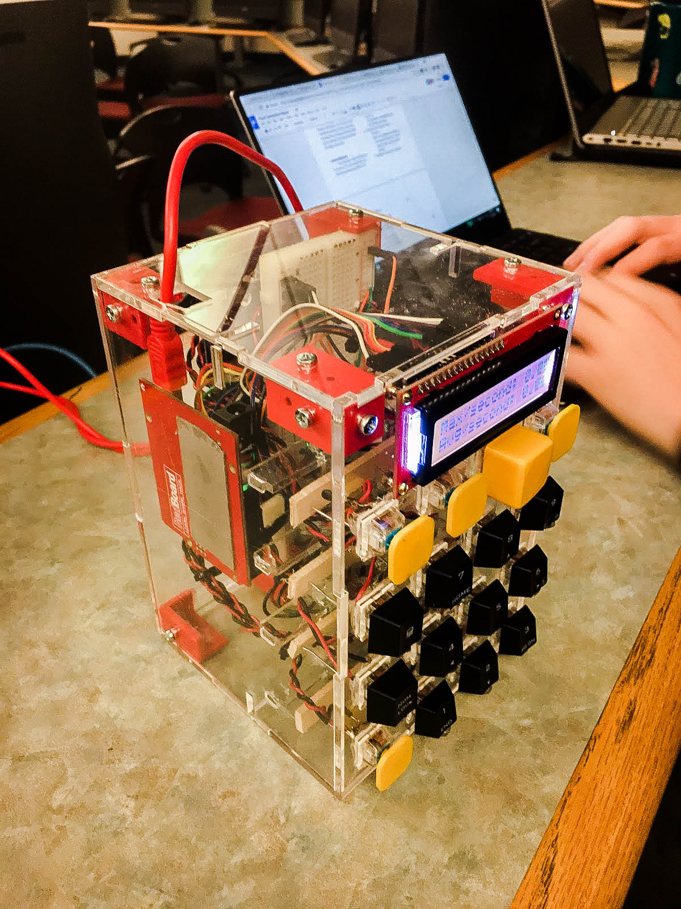
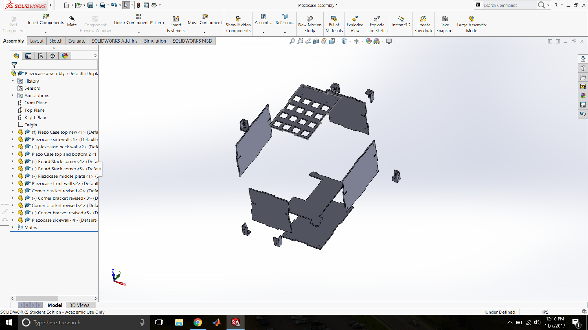

Piezoelectric Keyboard

Project Description
The goal was to create a keyboard prototype, from an existing mechanical number pad, by designing a model in which keystrokes would toggle 12 Minisense-100 piezo sensors wired in parallel to a data gathering circuit. The circuit would monitor voltage output from the keystrokes, allowing the study to determine the power output as a function of keystroke frequency.
Project Details
Used AutoCAD to design the case, and SolidWorkds to 3-D print the brackets
Created a full bridge rectifier to convert the AC current to DC
Used an Arduino to create a voltmeter and display the data on an LED screen
Other Pictures

